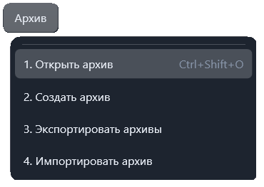
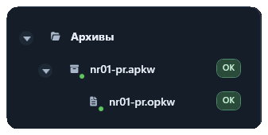

Функция «Открыть архив»
Команда «Архив → Открыть архив» открывает рабочую вкладку «Архив». Это окно хранилища приложения, а не диалог выбора внешнего файла.
Сочетание клавиш: Ctrl + Shift + O.

Работа во вкладке
- Разверните узел «Архивы» в дереве слева.
- Выберите архив. Список программ появится в таблице «Файлы архива»; при раскрытии архива его файлы также появятся в дереве.
- Выберите файл в дереве или таблице для просмотра его содержимого в нижней панели.

Два раздела дерева
- Архивы — готовые архивы
.apkwиз хранилища приложения. - Архивы на проверке — рабочие файлы после преобразования, для которых предусмотрены просмотр, открытие в редакторе и повторная проверка.
Если архивов нет, в узле отображается сообщение «Архивы не найдены». Добавьте готовый архив через импорт или создайте новый, если позволяют права.
Дальнейшие действия
Действия над выбранным архивом описаны в разделе «Операции с архивами», над программой — в разделе «Операции с файлами архива».
Выбор файла показывает предварительный просмотр и не запускает программу контроля. Во время работы с аппаратурой команда открытия из верхнего меню блокируется.